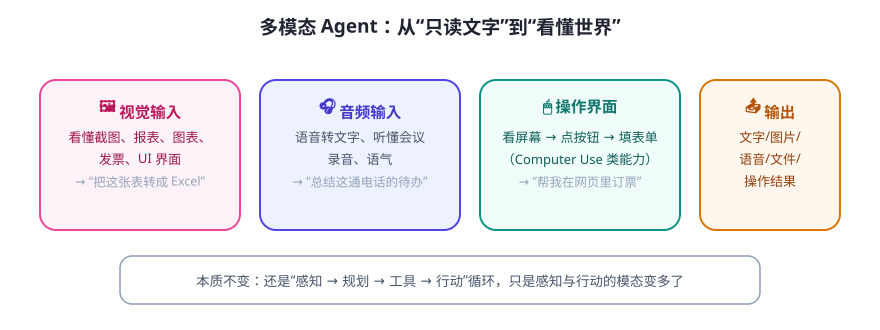

到目前为止，我们处理的都是文字。但真实世界是图片、语音、视频、操作界面的。多模态 = 让 Agent 能“看”“听”“点”，感知和行动的通道变多了。
多模态的三种形态

三种能力，三种成熟度
| 能力 | 典型场景 | 现状判断 |
|---|---|---|
| 视觉理解 | 读报表/截图/发票、看图表说话 | 较成熟，可直接用于“把图转成结构化数据” |
| 语音 | 会议转写、语音助手（先转文字再处理） | 成熟；注意说话人区分、口音与隐私 |
| 操作界面（Computer Use） | 替用户点网页、操作软件 | 进展快但易错、慢、贵，务必人工监督 |
工程思路：别硬上，先“降维”
- 能不识别就不识别：能拿到结构化数据（API/表格）就别 OCR/看图。
- 多模态 → 文本再进主流程：截图 → 让模型转成文字/JSON → 后续仍走你熟悉的文本 Agent 流程。这是当前最稳的架构。
- 界面操作用在“封闭受控环境”：先在自己可控的网页/沙箱里试，别一上来操作生产系统。
⚠️ 风险提醒：界面操作类 Agent 一旦跑偏，可能点到删除、误发消息。务必：只读优先、危险操作确认、全程录屏可回溯、设步数上限。
✍️ 今日练习（约 12 分钟）
- 找一个能“读图”的 AI 助手，给它一张你手机里的截图（如账单/报表），让它输出结构化信息，检查准确率。
- 设计一个“多模态降维”流程：截图 → 提取文字/JSON → 交给文本 Agent → 得到什么结果？画出来。
- 想一个你工作中“如果能看懂图片/屏幕就能自动化”的场景，评估它的风险等级。
📌 今日小结
三种形态视觉理解 · 语音 · 界面操作
架构心法多模态 → 先转结构化文本 → 再走文本 Agent 主流程（最稳）
成熟度看图较成熟 · 语音成熟 · 操作界面易错需监督
铁律受控环境试用 · 危险操作确认 · 可回溯
明天预告：实战——办公自动化 Agent：读写文档/表格/邮件，让 Agent 帮你干活而不是陪你聊天。